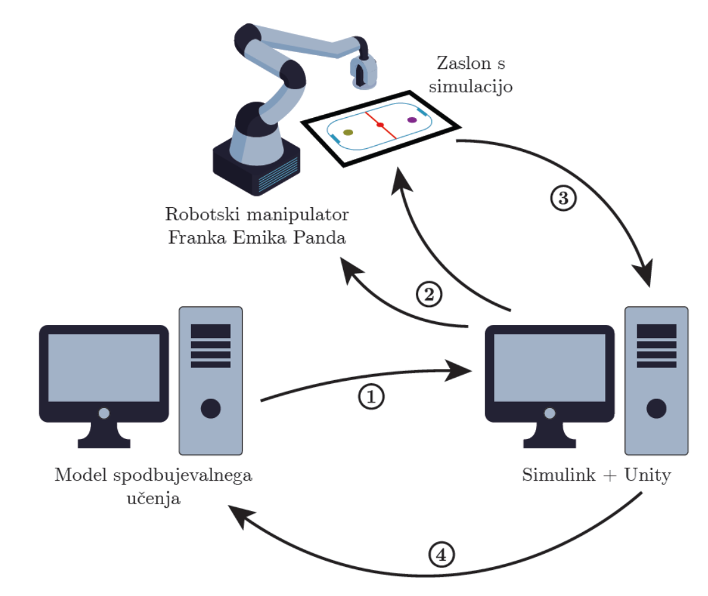
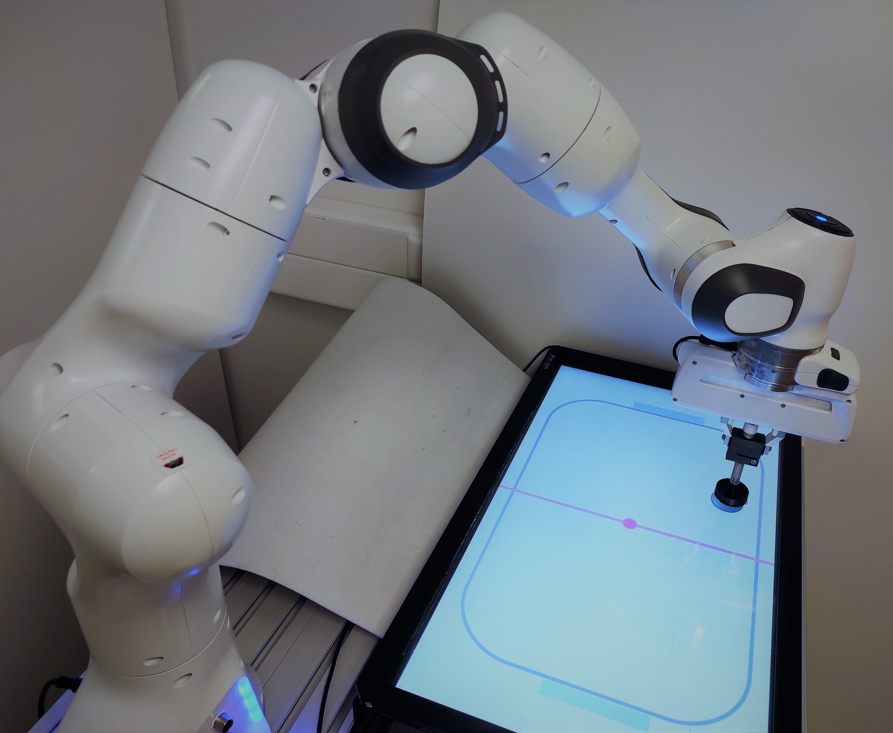
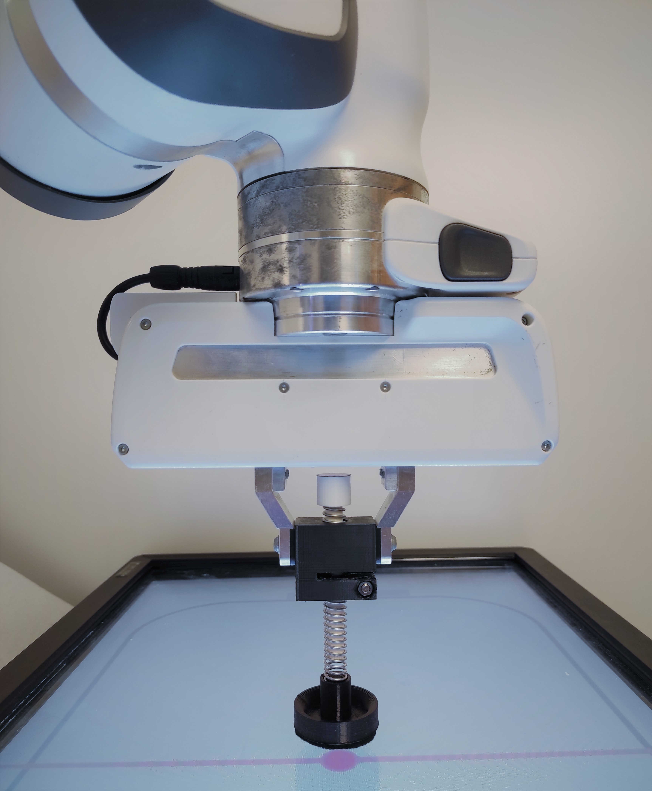
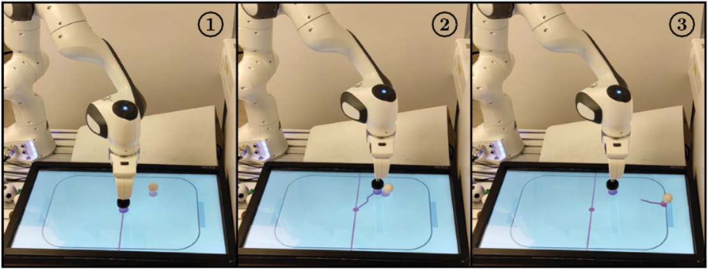
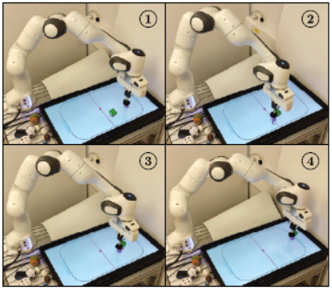

Povezovanje z robotom
Povezovanje z robotom poteka preko UDP komunikacije.
Za prikaz spodbujevalnega učenja na dejanskem robotu boste uporabili robota Franka Emika Panda, zaslon, ki je nameščen v delovnem prostoru robota, in IR senzorje za zaznavanje predmetov na zaslonu. Zaslon je prekrit s prozorno površino (pleksi steklo) z robovi in deluje kot delovni prostor za igralno okolje. Predmeti so postavljeni na površino iz pleksi stekla, IR-senzorji pa so nameščeni ob robu površine iz pleksi stekla. Franka Emika Panda je sodelujoč robotski manipulator s sedmimi stopnjami prostosti, senzorjem navora v vsakem sklepu, dosegom 855 mm in nosilnostjo 3 kg. Na vrhu ima prijemalo, s katerim lahko zgrabi predmete ali orodja. V našem primeru bomo uporabili 3D-natisnjeno orodje, ki predstavlja agenta. Robota se upravlja s shemo Simulink, ki pošilja podatke krmilniku robota prek protokola UDP (User Datagram Protocol). Za vizualizacijo okolja se uporablja simulacijski zaslon v programu Unity, pravtako se za pošiljanje podatkov iz sheme Simulink v program Unity uporablja protokol UDP. Zaslon služi kot senzor za zaznavanje položaja predmetov na njem s pomočjo IR-senzorjev na robovih. Ko predmet prekine žarek, lahko sistem zazna in izmeri njegov položaj.
Arhitektura celotnega sistema je prikazana na spodnji sliki. Agent se izvaja na ločenem računalniku in pošilja položaj agenta (puščica številka 1 na sliki 2) na računalnik, na katerem teče model Simulink in vizualizacija Unity. Model Simulink pošilja podatke za vodenje robota krmilniku robota (puščica številka 2). Na zaslonu se prikaže vizualizacija Unity. IR-senzorji zaznajo položaj predmeta v delovnem prostoru okolja in ga pošljejo v računalnik z modelom Simulink in vizualizacijo Unity (puščica številka 3). Stanje okolja se nazadnje pošlje nazaj v računalnik, ki izračuna dejanja agenta (puščica številka 4).

Slika z robotom in zaslonom

Orodje

Primer premikanja v točko

Primer potiskanja žogice

Primer potiskanja naključnega objekta

Predelana koda za komunikacijo z robotom
AI agenti
Spremembne v python skripti circ_env.py
__init__
Za vrstico self.create_agent(agent_radius_px, 'k') je potrebno postaviti agenta na sredino delovnega prostora s funkcijo reset_agent.
``` py highlight="2" self.create_agent(agent_radius_px, 'k') self.reset_agent((self.width/2, self.height/2))
- `reset`
Potrebno je zakomentirati vrstico za resetiranje pozicije agenta. Če se pobira pozicijo tarče z zaslona, je potrebno zakomntirati tudi vrstico za resetiranje pozicije tarče.
``` py
#self.reset_agent((np.random.uniform(self.agent_radius*1.5, self.width - self.agent_radius*1.5), np.random.uniform(self.agent_radius*1.5, self.height - self.agent_radius*1.5)))
#self.reset_puck((np.random.uniform(self.object_radius+self.agent_radius*3, self.width - self.object_radius-self.agent_radius*3), np.random.uniform(self.object_radius+self.agent_radius*3, self.height - self.object_radius-self.agent_radius*3)))
#self.reset_target((np.random.uniform(self.agent_radius*2, self.width - self.agent_radius*2), np.random.uniform(self.agent_radius*2, self.height - self.agent_radius*2)))
step
Na koncu kode za nagrado je potrebno postaviti zastavico done na False, da se epozoda ne konča.
``` py highlight="1" done = False
# Reward function stop
############ DO TUKAJ SPREMINJATE
```
Zagon na robotu
Unity & Simulink
Pot do projekta z Unity in Simulink projekta
D:\VAJE\2023\VR
Pot do Simulink sheme
D:\VAJE\2023\VR\RL\EnvCirc\matlab
Unity
Zažene se UnityHub in projekt. Še bolje je zagnati kar FrankaPandaIK.exe aplikacijo, ki je na D:\VAJE\2023\VR\RL\EnvCircAplikacija.
Simulink
Shema z imenom franka_control.slx v mapi D:\VAJE\2023\VR\RL\EnvCirc\matlab.
Ubuntu Linux RT Libfranka
Terminal
console
cd users/aljazb/Control_Libfranka/libfranka/build/
./Control_Libfranka 192.168.4.20
Postopek zaganjanja
- Virtual machine Windows 10: zaženi Unity aplikacijo.
- Virtual machine Ubuntu Linux RT Libfranka: zaženi
./Control_Libfranka 192.168.4.20. - Virtual machine Windows 10: zaženi
franka_control.slx. V uporabniškem vmesniku izberi Enable Movement-On,Grasp Mode-On-Close, ko se prijemalo zapre slediGrasp Mode-OffMove to Default Pose, robot se bo premaknil v začetno postavitev,Enable Movement-Off,Enable Movement-On,Application Mode-On.- Računalnik AI: zaženi
python load_circ_modelUDP.py. - Virtual machine Windows 10: v uporabniškem vmesniku izberi
Application Mode-Off.Enable Movement-Off.- Po končanem izvajanju, ugasni
franka_control.slxskripto, da se UDP buffer izprazni.
Videji primera na robotu
Videje je potrebno odpreti v novem oknu